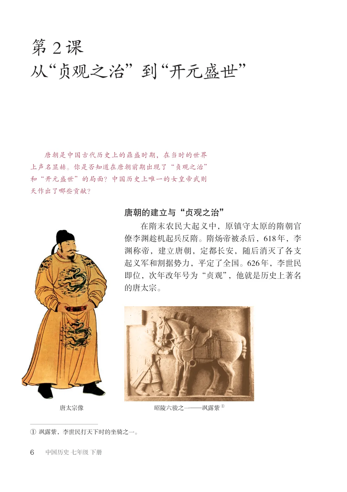
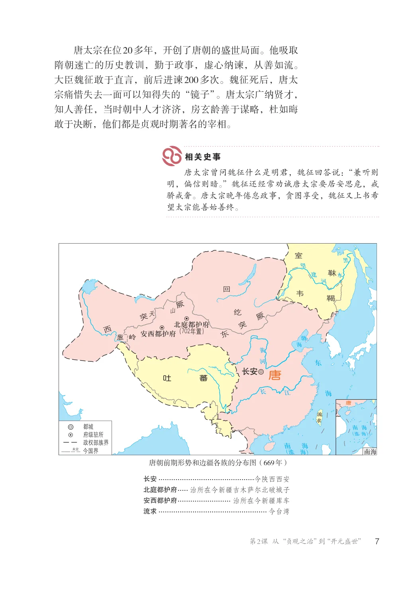
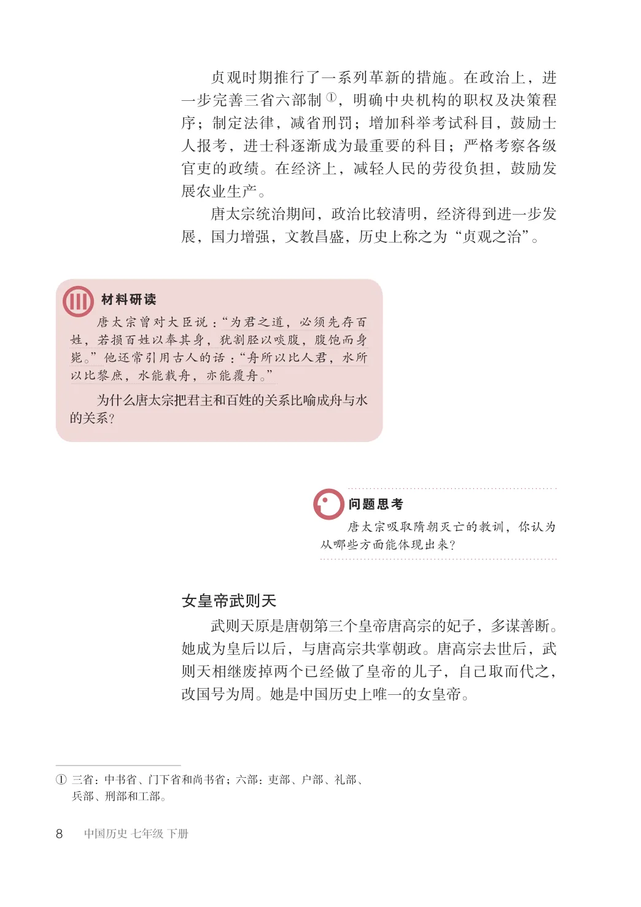
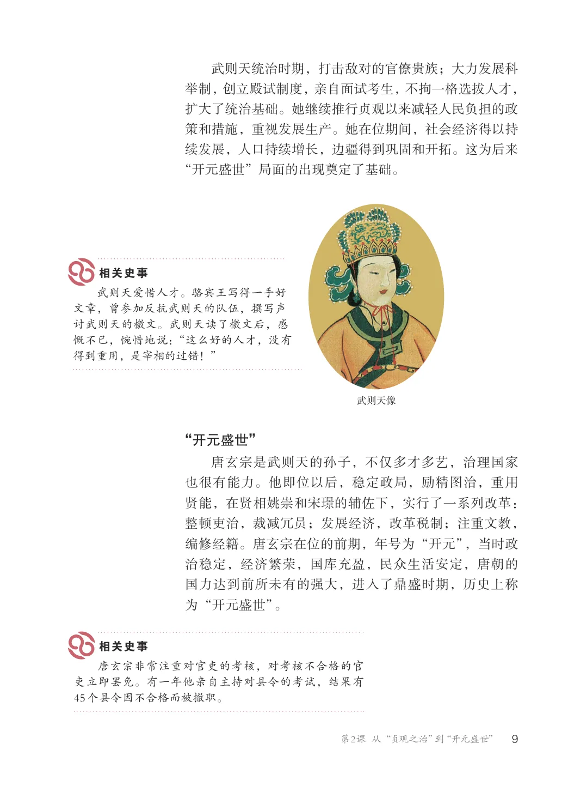
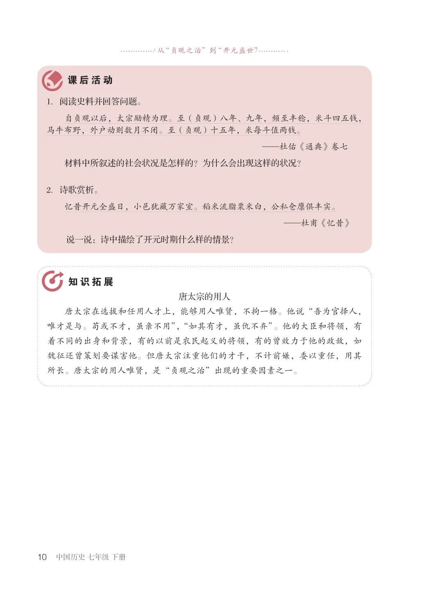

第1单元 · 教材第 6–10 页
第2课 从“贞观之治”到“开元盛世”
文字版依据教材 PDF 文本层整理；复杂地图、图表及版面关系请以右侧教材原页为准。
唐朝是中国古代历史上的鼎盛时期，在当时的世界上声名显赫。你是否知道在唐朝前期出现了“贞观之治”和“开元盛世”的局面？中国历史上唯一的女皇帝武则天作出了哪些贡献？
唐朝的建立与“贞观之治”
在隋末农民大起义中，原镇守太原的隋朝官僚李渊趁机起兵反隋。隋炀帝被杀后，618年，李渊称帝，建立唐朝，定都长安，随后消灭了各支起义军和割据势力，平定了全国。626年，李世民即位，次年改年号为“贞观”，他就是历史上著名的唐太宗。
①
唐太宗像昭陵六骏之一—飒露紫
①飒露紫，李世民打天下时的坐骑之一。

唐太宗在位20多年，开创了唐朝的盛世局面。他吸取隋朝速亡的历史教训，勤于政事，虚心纳谏，从善如流。大臣魏征敢于直言，前后进谏200多次。魏征死后，唐太宗痛惜失去一面可以知得失的“镜子”。唐太宗广纳贤才，知人善任，当时朝中人才济济，房玄龄善于谋略，杜如晦敢于决断，他们都是贞观时期著名的宰相。
唐太宗曾问魏征什么是明君，魏征回答说：“兼听则明，偏信则暗。”魏征还经常劝诫唐太宗要居安思危，戒骄戒奢。唐太宗晚年倦怠政事，贪图享受，魏征又上书希望太宗能善始善终。
室
回
韦
西突厥
纥
东突厥
北庭都护府
（702年置）
安西都护府
长安
唐
吐蕃
都城府级驻所政权部族界今国界未定南海
海南（涨海）
（涨海）
唐朝前期形势和边疆各族的分布图（669年）
长安.............................................今陕西西安
北庭都护府...... 治所在今新疆吉木萨尔北破城子
安西都护府.......................... 治所在今新疆库车
流求................................................... 今台湾

贞观时期推行了一系列革新的措施。在政治上，进一步完善三省六部制①，明确中央机构的职权及决策程序；制定法律，减省刑罚；增加科举考试科目，鼓励士人报考，进士科逐渐成为最重要的科目；严格考察各级官吏的政绩。在经济上，减轻人民的劳役负担，鼓励发展农业生产。唐太宗统治期间，政治比较清明，经济得到进一步发展，国力增强，文教昌盛，历史上称之为“贞观之治”。
唐太宗曾对大臣说：“为君之道，必须先存百姓，若损百姓以奉其身，犹割胫以啖腹，腹饱而身毙。”他还常引用古人的话：“舟所以比人君，水所以比黎庶，水能载舟，亦能覆舟。”为什么唐太宗把君主和百姓的关系比喻成舟与水的关系？
唐太宗吸取隋朝灭亡的教训，你认为从哪些方面能体现出来？
女皇帝武则天
武则天原是唐朝第三个皇帝唐高宗的妃子，多谋善断。她成为皇后以后，与唐高宗共掌朝政。唐高宗去世后，武则天相继废掉两个已经做了皇帝的儿子，自己取而代之，改国号为周。她是中国历史上唯一的女皇帝。
①三省：中书省、门下省和尚书省；六部：吏部、户部、礼部、
兵部、刑部和工部。

武则天统治时期，打击敌对的官僚贵族；大力发展科举制，创立殿试制度，亲自面试考生，不拘一格选拔人才，扩大了统治基础。她继续推行贞观以来减轻人民负担的政策和措施，重视发展生产。她在位期间，社会经济得以持续发展，人口持续增长，边疆得到巩固和开拓。这为后来“开元盛世”局面的出现奠定了基础。
武则天爱惜人才。骆宾王写得一手好文章，曾参加反抗武则天的队伍，撰写声讨武则天的檄文。武则天读了檄文后，感慨不已，惋惜地说：“这么好的人才，没有得到重用，是宰相的过错！”
武则天像
“开元盛世”
唐玄宗是武则天的孙子，不仅多才多艺，治理国家也很有能力。他即位以后，稳定政局，励精图治，重用贤能，在贤相姚崇和宋的辅佐下，实行了一系列改革：整顿吏治，裁减冗员；发展经济，改革税制；注重文教，编修经籍。唐玄宗在位的前期，年号为“开元”，当时政治稳定，经济繁荣，国库充盈，民众生活安定，唐朝的国力达到前所未有的强大，进入了鼎盛时期，历史上称为“开元盛世”。
唐玄宗非常注重对官吏的考核，对考核不合格的官吏立即罢免。有一年他亲自主持对县令的考试，结果有45个县令因不合格而被撤职。

/ 从“贞观之治”到“开元盛世” /
1．阅读史料并回答问题。自贞观以后，太宗励精为理。至（贞观）八年、九年，频至丰稔，米斗四五钱，马牛布野，外户动则数月不闭。至（贞观）十五年，米每斗值两钱。
—杜佑《通典》卷七
材料中所叙述的社会状况是怎样的？为什么会出现这样的状况？
2．诗歌赏析。
忆昔开元全盛日，小邑犹藏万家室。稻米流脂粟米白，公私仓廪俱丰实。
—杜甫《忆昔》
说一说：诗中描绘了开元时期什么样的情景？
唐太宗的用人唐太宗在选拔和任用人才上，能够用人唯贤，不拘一格。他说“吾为官择人，唯才是与。苟或不才，虽亲不用”，“如其有才，虽仇不弃”。他的大臣和将领，有着不同的出身和背景，有的以前是农民起义的将领，有的曾效力于他的政敌，如魏征还曾策划要谋害他。但唐太宗注重他们的才干，不计前嫌，委以重任，用其所长。唐太宗的用人唯贤，是“贞观之治”出现的重要因素之一。
